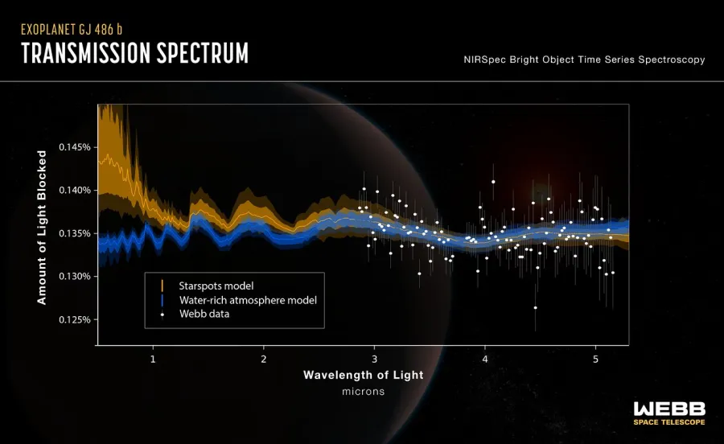

1. Mai 2023
GJ 486 b: Wasserdampf – vom Planeten oder vom Stern?
Das James-Webb-Weltraumteleskop hat beim heißen Gesteinsplaneten GJ 486 b Hinweise auf Wasserdampf gefunden. Der Planet ist etwa 30 Prozent größer als die Erde, dreimal so massereich und umrundet seinen Roten Zwergstern in weniger als zwei Tagen. Seine Oberflächentemperatur beträgt etwa 430 Grad Celsius.
Stammt der Wasserdampf vom Planeten, hätte dieser trotz der Hitze eine Atmosphäre. Das Signal könnte aber ebenso gut von kühlen Sternflecken auf dem Stern selbst kommen. Welche Erklärung zutrifft, sollen weitere Beobachtungen mit anderen Instrumenten des Teleskops klären.
Quelle: ESA/Webb: "Webb finds water vapour, but from a rocky planet or its star?" (image page GJ486b), 01.05.2023